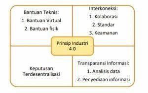

Pesatnya perkembangan gaya hidup dan teknologi masyarakat telah menyebabkan perubahan gaya hidup dan cara kerja masyarakat, dan kehidupan digital telah mempengaruhi semua bidang ilmu pengetahuan, yang merupakan revolusi industri.
Dengan pesatnya perkembangan teknologi informasi, khususnya telah membawa beberapa terobosan di bidang kecerdasan buatan. Bidang keilmuan adalah bidang keilmuan dimana teknologi diciptakan dengan mengambil keahlian seseorang dan memasukkannya ke dalam aplikasi untuk memudahkan suatu proses.
Dipertemukannya mesin uap dan air untuk membantu para pekerja, sekitar tahun 1800-an, dengan adanya mesin air dan uap yang dipergunakan dapat membantu para pekerja.
Industri 2.0 ditemukannya energi listrik, tentunya penggunaan listrik lebih efektif apabila dibandingkan dengan tenaga uap dan air.
Industri 3.0 ditandai dengan ditemukannya perangkat elektronik. Pada pembuatannya melahirkan sistem dengan perangkat lunak yang memanfaatkan perangkat keras elektronik.
Pada industri 4.0, penggunaan internet menjadi lebih pesat, mesin-mesin dapat berjalan menggunakan media internet untuk segala aktifitasnya seperti penggunaan e-toll. Pada pabrik-pabrik juga saat ini sudah menggunakan tren otomasi yang bisa melakukan pertukaran data dalam teknologi yang ada di pabrik tersebut semua secara online.
Hampir semua bidang yang mencakup kehidupan sudah menggunakan teknologi dari industi 4.0 ini. Perubahan dirasakan oleh masyarakat sangat masif, dimana masyarakat harus mulai merubah pola pikir hingga pola kerja mereka.
Salah satu design industri 4.0 yang sangat terasa oleh masyarakat adalah berkembangnya IoT. IoT (Internet of Things) mulai digunakan dalam industri 4.0 saat ini. Dimana mesin memiliki kemampuan yang dapat terhubung dengan mesin lainnya hanya dengan menggunakan fasilitas internet.
Singkatnya prinsip pindustri.4.0 menurut Hermann dkk (2016) seperti gambar dibawah ini.
Jadi dalam revolusi industri 4.0 ini gabungan daripada sistem keamanan yang lebih baik, Internet of Things dan jaringan internet menjadi aspek utama dalam revolusi ini, atau biasa disebut sebagai revolusi digital.
Merupakan revolusi yang memiliki potensi untuk mempercepat proses produksi baik secara kualitas maupun kuantitas yang dapat dikerjakan oleh mesin. Otomasi industri ini menjadi bahasan yang sangat penting dalam dunia industri, karena ini berkaitan dengan tenaga kerja.
Struktur robotik berbeda-beda, ada yang berbentuk hanya berupa tangan atau pencapit. Dimana strukturnya terdiri dari :
Adapun manfaat pengunaan robot dibidang industri adalah sebagai berikut:
Merupakan komputer yang dikatakan dapat menggantikan meja gambar sebagai alat bantu untuk menggambar. Dalam penggunaannya aplikasi ini digunakan untuk melakukan design gambar untuk media promosi dan sebagainya.
Jenis komputer ini digunakan untuk membantu mengoperasikan mesin produksi dalam skala yang besar terutama dalam proses produksi bahan mentah yang diolah hingga menghasilkan produk jadi agar pengerjaannya menjadi lebih cepat.
Komputer jenis ini digunakan dalam bidang industri untuk membuat suatu rancangan sumber daya produksi skala besar. Dengan adanya komputer dalam jenis ini dapat memudahkan dalam membuat suatu perencanaan secara terencana dan terstruktur dengan baik.
Komputer manufaktur terintegrasi (CIM) adalah pendekatan pembuatan menggunakan komputer untuk mengontrol seluruh proses produksi. Melalui integrasi komputer, manufaktur dapat lebih cepat dan kurang rawan kesalahan. Biasanya CIM bergantung pada proses kontrol loop tertutup berdasarkan input real time dari sensor, ia juga dikenal sebagai desain yang fleksibel dan manufaktur. Elemen CIM adalah design dan manufakturing, dimana manufakturing melengkapi perencanaan produksi, pengendalian produksi dan proses produksi.
Perhatian utama adalah bagaimana komputer digunakan sebagai suatu sistem konseptual dicampur dengan aplikasi dalam sistem fisik oleh suatu konsep yang disebut computer integrated manufacturing (CIM). Kombinasi dari aplikasi yang terpisah, seperti CAD (CAD), manufaktur komputer dibantu (CAM), robotika.
Dengan adanya teknologi dalam dunia industri sangat membantu pekerjaan manusia karena lebih efektif dan efisien. Beberapa aspek Komputer dimanfaatkan pada bidang industri yakni pada aspek :
Dengan adanya komputer proses produksi akan lebih cepat dibanding kekuatan, kecepatan dan ketepatan manusia, karena semua proses pekerjaan akan menggunakan sistem komputerisasi.
Komputer sangat dibutuhkan untuk pembuatan desain suatu produk, agar tampilan produk yang dijual terlihat menarik.
Dengan adanya komputer promosi sebuah produk akan lebih mudah. Diantaranya promosi dapat dilakukan dengan menggunakan situs web maupun blog. Pembuatan iklan yang menarik menggunakan komputer dipercaya hasilnya cukup maksimal.
Kegiatan administrasi dalam sebuah industri akan lebih mudah jika menggunakan komputer, diantaranya :
Walaupun banyak kegunaan komputer di bidang industri, ada pula dampak negatif yang ditimbulkan akibat penggunaan komputer dibidang industri, antara lain :
Teknologi informasi yang semakin mudah terakses hingga ke seluruh pelosok menyebabkan semua orang dapat terhubung di dalam sebuah jejaring sosial. Banjir informasi seperti yang diprediksikan Futurolog Alvin Tofler (1970) menjadi realitas yang ditemukan di era revolusi industri saat ini. Informasi yang sangat melimpah ini menyediakan manfaat yang besar untuk pengembangan ilmu pengetahuan maupun perekonomian. Jalaluddin Rakhmat (1997:6) membagi era informasi kedalam lima karakteristik, yaitu Kekayaan, Teknosfer, Infosfer, Sosiosfer, dan Psikosfer. Karakteristik informasi yang kedua adalah teknosfer atau pola lingkungan teknologi. Masyarakat di era revolusi industry 4.0 memiliki ketergantungan yang sangat besar dalam menggunakan teknologi informasi. Melalui internet, akses informasi dapat dijangkau hingga ke berbagai penjuru dunia.
Karakteristik era informasi lainnya adalah sosiosfer atau pergeseran lingkungan komunikasi sosial. Namun saat ini, peran sosialisasi tradisional mereka telah diambil alih oleh media komputer dan smartphone. Efek ketergantungan yang tinggi dalam penggunaan media informasi digital telah membentuk opini setiap individu. Dengan demikian, tindakan share and resharing informasi telah didasari oleh nilai-nilai etis sehingga tidak akan menciptakan eskalasi kegaduhan publik.